dandik.systems
we try to conduct research on mathematical structures, in a relatively dandik way, mostly about formal verifications and proof assistants such as lean4.
for any inquiries, contact arda[et]dandik[döt]systems.